Solution-Neutral Function and Concepts
Systems Architecture · Chapter 7
From Reverse to Forward Engineering
- Chapters 4–6 pursued reverse engineering: the system already exists, so we analyzed its form, function, and architecture
- Using centrifugal pumps and bubblesort to teach architecture was “a sledge hammer to a thumb tack” — simple systems don’t need the full toolkit
- This chapter shifts to forward engineering: two new ideas, solution-neutral function and concept, plus two higher-complexity systems — an air transportation service and a home data network
Tip
Table 7.1 amends the Chapter 5 questions and adds a new one (7a) — collating everything into a method for synthesis, not just analysis.
Box 7.1 · Principle of Solution-Neutral Function
“We cannot solve our problems with the same thinking we used when we created them.” — Albert Einstein
- Poor system specifications frequently contain clues about an intended solution, function, or form — and those clues narrow the architect’s options before exploration even begins
- Use solution-neutral functions where possible, and use the hierarchy of solution-neutral statements to scope how broad an exploration should be
Figure 7.1 · Concepts for Removing a Wine Bottle Cork
- A corkscrew opens a wine bottle. But can we name other concepts for the same job?
- We describe concepts as an operand-process-instrument set: cork (operand) pushing (process) injected gas (instrument)
- Pulling alone is insufficient to describe a concept — “cork pulling with a screw” is a corkscrew
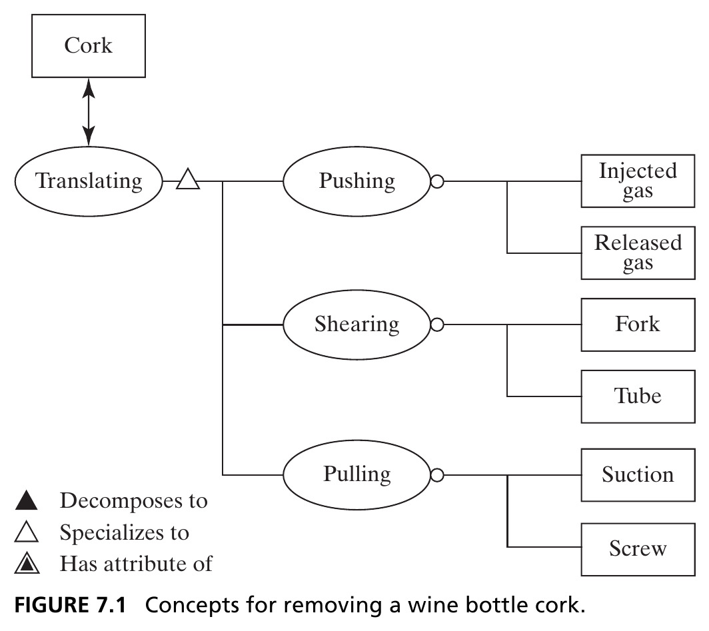
Source: Crawley, Cameron & Selva (2016), Fig. 7.1.
Solution-Neutral Function in a Hierarchy
- Drawing Figure 7.1 is itself a form of structured creativity (Ch. 12) — pulling led us to think about pushing, which we might otherwise have missed
- Solution-neutral function exists in a hierarchy: translating the cork generalizes to removing the cork, which generalizes to opening the bottle, up to accessing the wine
Tip
The breadth of concepts we generate depends heavily on the functional intent we pose — the more solution-neutral the expression, the broader the set of concepts.
Figure 7.2 · A Hierarchy of Broader Concepts
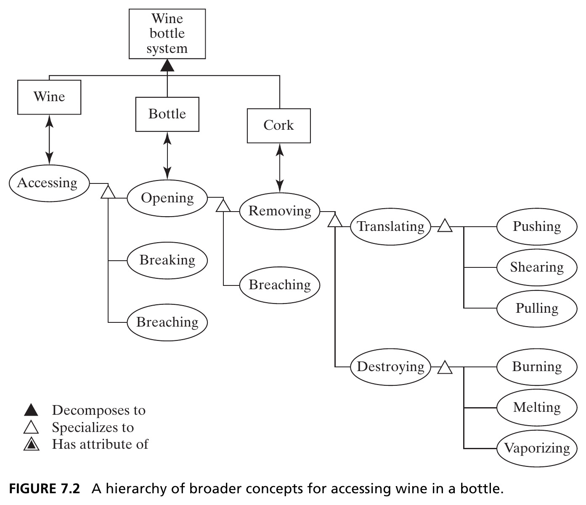
Where to stop is a matter of practicality — with a wine bottle already on the table, concepts above “wine accessing” make no sense. Source: Crawley, Cameron & Selva (2016), Fig. 7.2.
Table 7.1 · Questions for Defining Concept
| Question | Produces |
|---|---|
| 7a. Who are the beneficiaries? What is the solution-neutral operand and its value-related attribute/process? | A solution-neutral framing of the desired function |
| 5a. What is the value-related operand-process-form? What is the concept? What other concepts satisfy the same function? | The operand-process-form construct defining the system |
| 5b. What are the internal functions? What are the concept fragments and integrated concept? | The internal processes/operands, first- and second-level |
7.2 Identifying the Solution-Neutral Function
Deriving a Solution-Neutral Statement
The procedure (Question 7a):
- Consider the beneficiary
- Identify their need
- Identify the solution-neutral operand that, acted upon, yields the benefit
- Identify the operand’s attribute
- Identify other relevant attributes of the operand
- Define the solution-neutral process that changes the benefit-related attribute
- Identify relevant attributes of that process
Tip
Two new examples: an air transportation service (beneficiary: the traveler) and a home data network (beneficiary: the surfer).
Table 7.2 · Formulating the Solution-Neutral Intent
| Question | Transportation Service | Home Network |
|---|---|---|
| Beneficiary? | Traveler | Surfer |
| Need? | “Visit a client in another city” | “Buy a cool book” |
| Solution-neutral operand? | Traveler | Book |
| Benefit-related attribute? | Location | Ownership |
| Other operand attributes? | Alone with light luggage | Consistent with tastes |
| Solution-neutral process? | Changing (transporting) | Buying |
| Attributes of process? | Safely and on demand | Online |
Intent Vanishes When the System Operates
When a system operates, the intent vanishes. Watching a room full of servers, or a plane in flight, it’s hard to tell why — the architect must record intent, because once built, the system rarely says it back.
In summary: the functional intent for a system should be stated as a solution-neutral function — an operand and a process (with their attributes) linked to value, containing no reference to solution.
7.3 Concept
The Notion of Concept
- The intellectual distance from solution-neutral function to architecture is a large gap to jump — concept bridges it
- Concept is the transition point from solution-neutral to solution-specific
- It must allow value-related functions to be executed, enabled by form; it establishes the vocabulary for the solution; it implicitly sets design parameters and the level of technology
Box 7.2 · Definition of Concept
Concept is a product or system vision, idea, notion, or mental image that maps function to form. It embodies a sense of how the system will function and an abstraction of the system form — a simplification of the architecture that allows for high-level reasoning.
Concept is not a system attribute, but a notional mapping between two attributes: form and function.
Figure 7.3 · Concept and Architecture
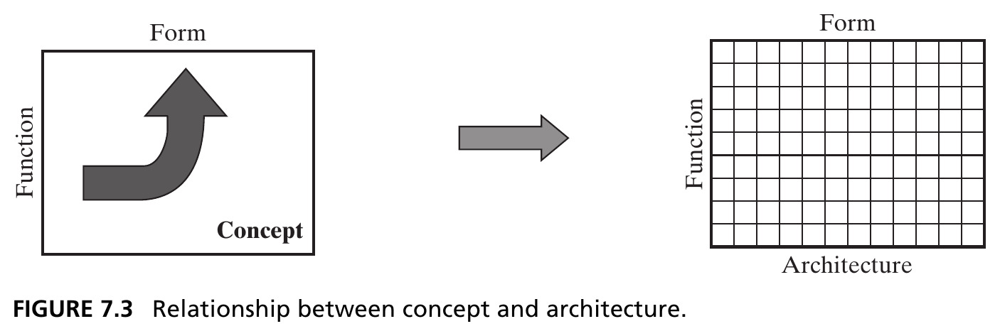
Concept and architecture both map function to form — concept does it in a general way, architecture in elaborate detail. If you have a concept, it guides the architecture; if you have an architecture, concept rationalizes it. Source: Crawley, Cameron & Selva (2016), Fig. 7.3.
Concept, Concretely
Tip
Pump: solution-neutral function is “moving fluid.” The concept is water (specific operand), pressurizing (specific process), using a centrifugal pump (specific instrument of form).
Tip
Bubblesort is literally the name of a concept: array (specific operand: entries), sequentially exchanging (specific process), using bubblesort (specific instrument).
- Naming the specific instrument (centrifugal pump, bubblesort) immediately establishes a vocabulary, sets design parameters, and implies a level of technology
Figure 7.4 · Template for Deriving Concept
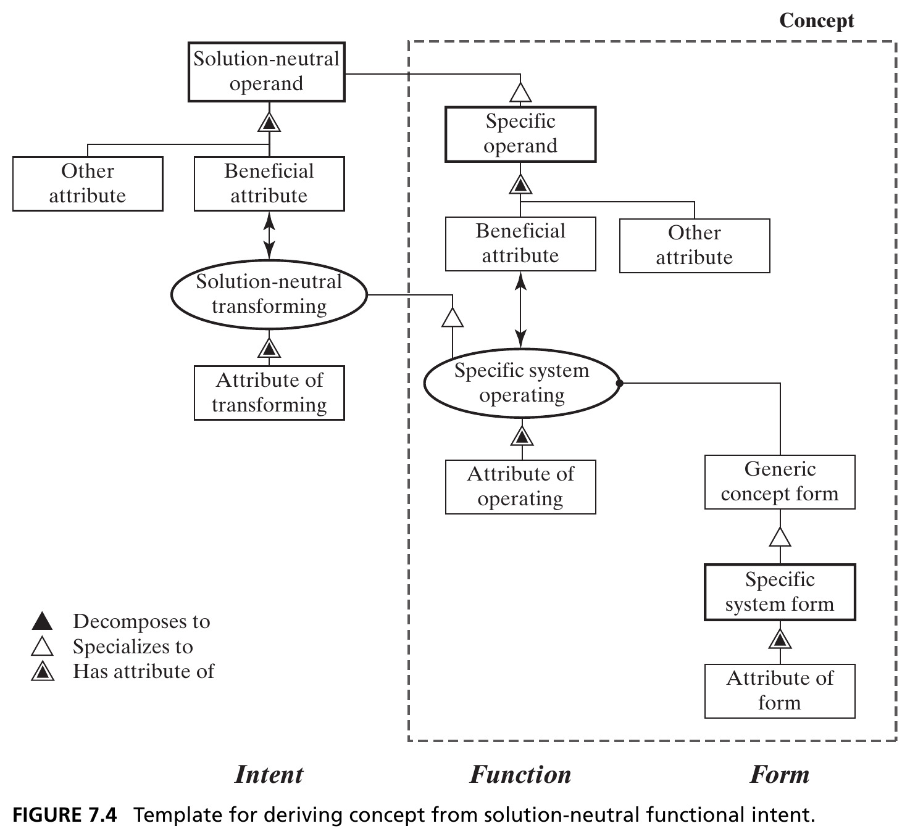
Five key ideas (thick borders): solution-neutral operand, specific operand, specific system operating, generic concept form, specific system form. Intent → Function → Form. Source: Crawley, Cameron & Selva (2016), Fig. 7.4.
Table 7.3 · Five Systems, Solution-Neutral to Concept
| Solution-Neutral Operand | Solution-Neutral Process | Specific Operand | Specific Process | Specific Instrument |
|---|---|---|---|---|
| Fluid | Moving | Water | Pressurizing | Centrifugal pump |
| Array | Sorting | Array entries | Sequentially exchanging | Bubblesort |
| Cork | Translating | Cork | Pulling | Screw |
| Traveler | Transporting | Traveler | Flying | Airplane |
| Book | Buying | Internet | Accessing | Home DSL connection |
There is no single relationship between solution-neutral and specific operand/process — specializing to concept requires creativity, not automation.
Box 7.3 · Specializing Function to Concept
A few of the patterns the specific operand can take, relative to the solution-neutral operand:
- Completely different operand and process: entertaining a person by watching a DVD
- Same process, different operand: choosing a leader by choosing the president
- Part of the solution-neutral operand: opening the bottle by removing the cork
- A type of the solution-neutral operand: moving fluid by pressurizing water
- An attribute of the solution-neutral operand: amplifying a signal by increasing signal voltage
Tip
Similar patterns apply to specializing the process — e.g., transporting a traveler by flying a traveler.
Table 7.4 · From Solution-Neutral to Concept
| Question | Transportation Service | Home Network |
|---|---|---|
| Specific operand? | Traveler | Internet |
| Benefit-related attribute? | Location | Access |
| Other operand attributes? | Alone with light luggage | High-speed connection |
| Specific process? | Flying | Gaining (accessing) |
| Attributes of process? | In less than 2 hours | Reliably |
| Generic concept form? | “Flyer” | “Accesser” |
| Specific form? | Airplane | Home DSL connection |
| Attributes of form? | Commercial | Inexpensive |
Naming Concepts
- No simple convention exists — rationally, concepts are named operand + process + instrument, as in light + emitting + diode
- Naming for just the operand rarely works — a “mower” only makes sense because of the implicit “er” ending suggesting an instrument
- Sometimes a concept is named for an attribute: “wireless” described two entirely different concepts, a century apart
Tip
Developing concepts is an open-ended creative process — the architect should build a rich set of alternatives before sorting and down-selecting (Ch. 11).
Figure 7.5 · A Tree of Concept Options
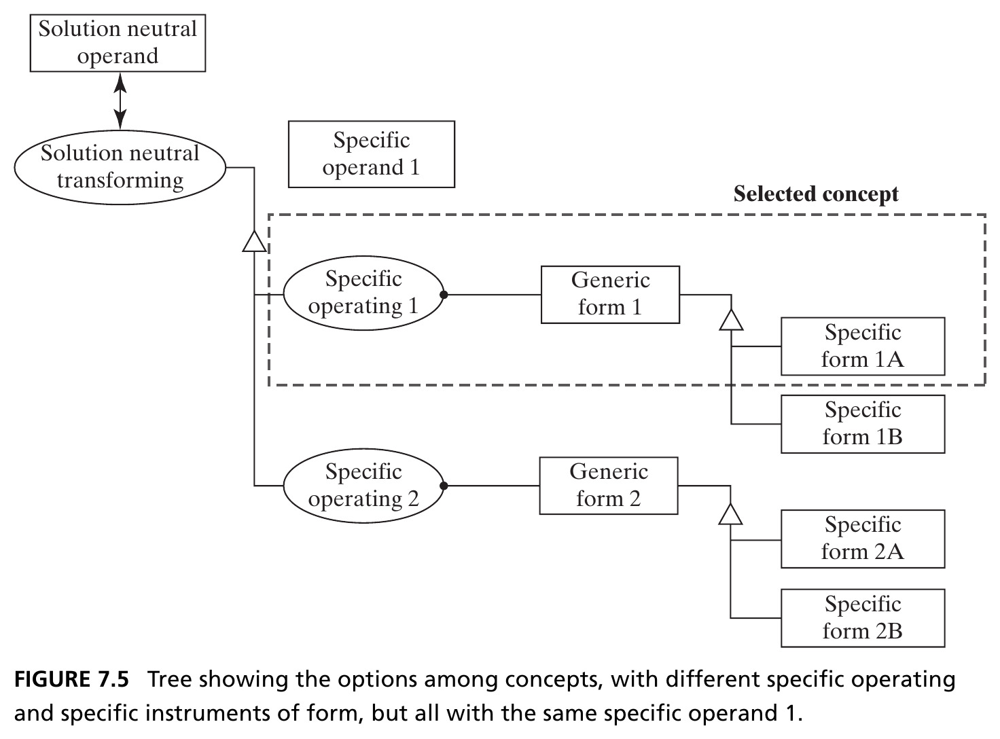
An operand layer, a process layer, and an instrumental form layer. Fewer operand options than process options, and fewer process options than form options — a decision tree. Source: Crawley, Cameron & Selva (2016), Fig. 7.5.
Figure 7.6 · Pump Concept Options
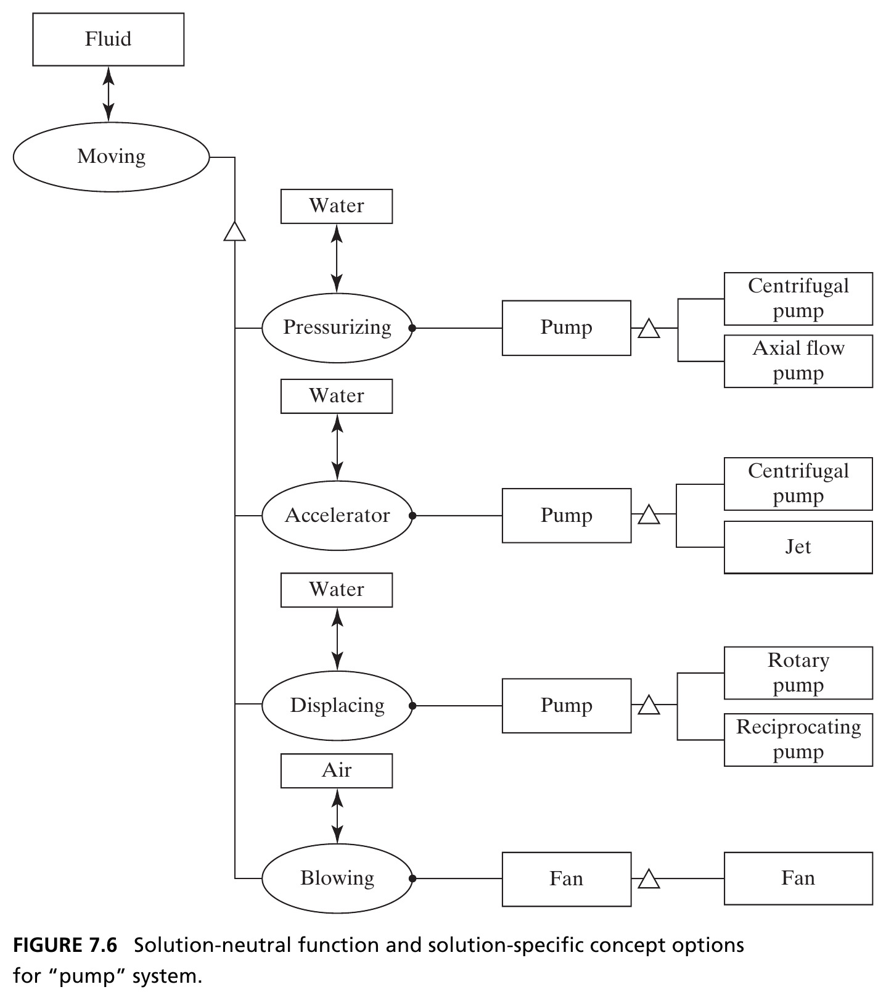
Seven non-exhaustive concept options for moving fluid — from pressurizing with a centrifugal pump, to blowing air with a fan. Source: Crawley, Cameron & Selva (2016), Fig. 7.6.
Figure 7.7 · Bubblesort Concept Options
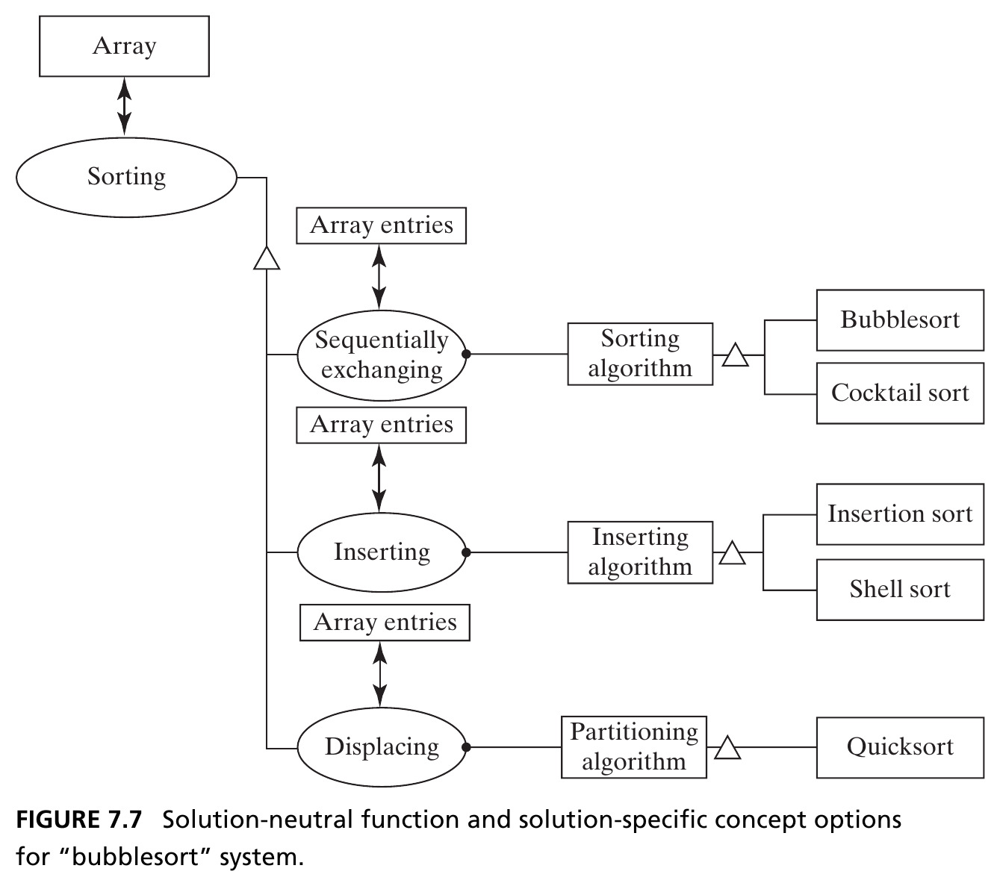
Three principles of operation for sorting an array — sequentially exchanging, inserting, displacing — each with specific algorithms. Source: Crawley, Cameron & Selva (2016), Fig. 7.7.
Figure 7.8 · Transportation Concept Options
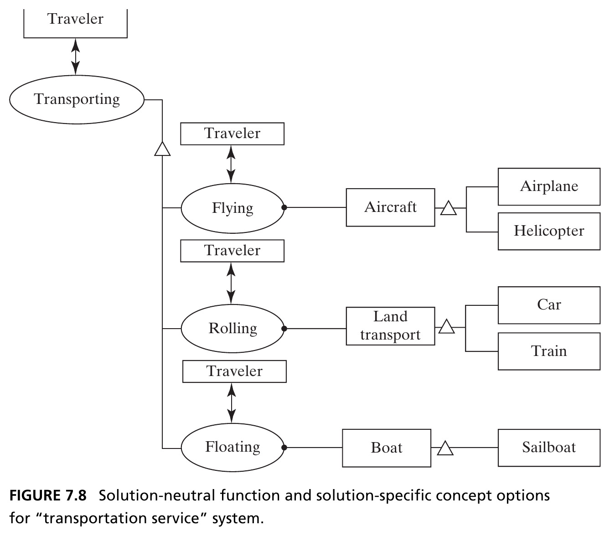
Flying, rolling, and floating — each linked to common instruments. Traveler is the only likely operand; transporting is a long-standing human endeavor. Source: Crawley, Cameron & Selva (2016), Fig. 7.8.
Figure 7.9 · Home Network Concept Options
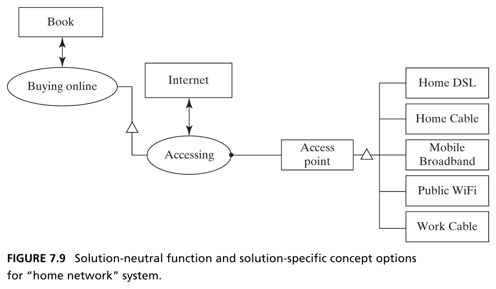
A far more limited option space — buying a book online basically requires accessing the Internet, so the only real options are how you access it. Source: Crawley, Cameron & Selva (2016), Fig. 7.9.
Broader Concepts and Hierarchy
- The concept-option analysis looked “downward” toward increasing detail — but we can also look “upward” toward increasingly general intent
- Why move fluid? Maybe to dry a basement. Why dry a basement? Maybe to improve living conditions
- There is hierarchy in functional intent, just as there is hierarchy in built systems
The specific function at one level becomes the solution-neutral functional intent at the next level down.
Figure 7.10 · A Hierarchy Leading to Flying the Traveler
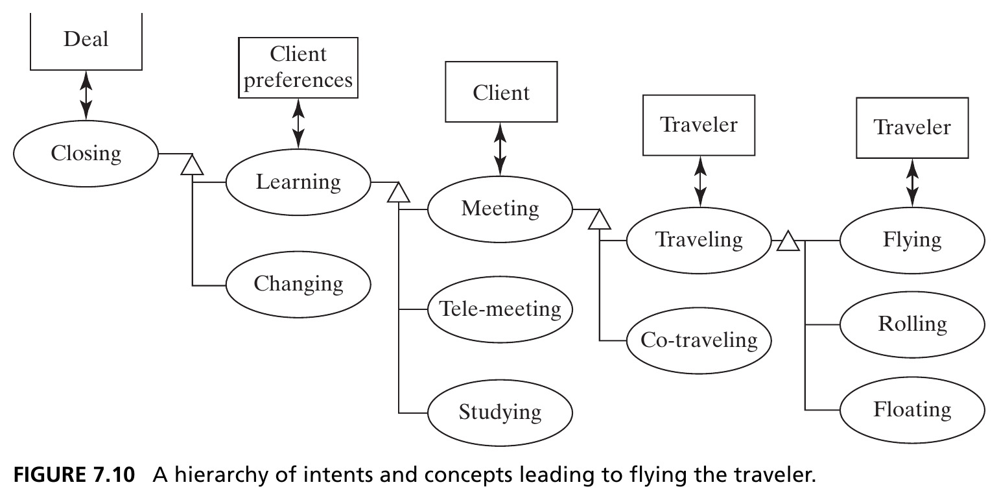
Closing a deal, by learning client preferences, by meeting the client, by traveling, by flying. At every level there are alternatives — a teleconference instead of a visit, a train instead of a flight. Source: Crawley, Cameron & Selva (2016), Fig. 7.10.
Figure 7.11 · A Hierarchy Leading to Home Internet Access
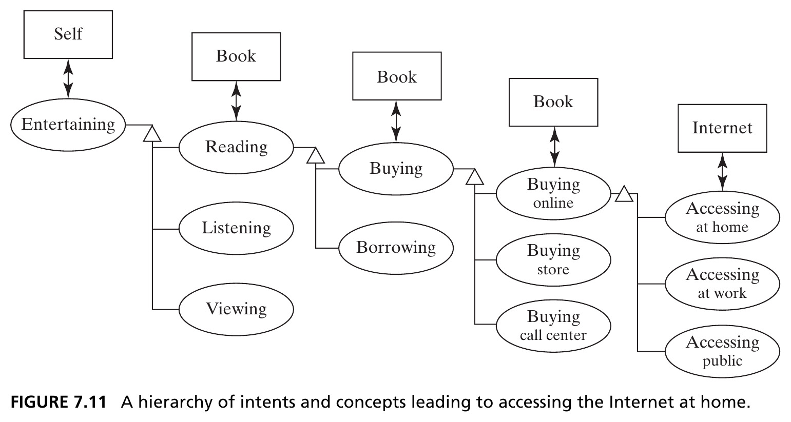
Entertainment → reading books → buying books → buying online → accessing the network. Understanding this hierarchy might surface new options, like selling electronic books. Source: Crawley, Cameron & Selva (2016), Fig. 7.11.
Section 7.3 Summary
- Concept is a system vision that maps function to form; it sets the solution vocabulary and design parameters, and rationalizes the architecture
- Concept is derived by specializing the solution-neutral operand and process to a specific operand, process, and abstraction of form
- There is no naming convention, and no single relationship between solution-neutral and specific — concept generation requires creativity
- Concepts sit in a hierarchy: understanding it one or two levels up is very useful for the architect
7.4 Integrated Concepts
Rich Concepts and Concept Fragments
- A concept’s process is often rich in meaning, and can be “unpacked” into several internal functions — visiting a client implies going there, spending time, and returning
- An integrated concept is made of smaller concept fragments — one per internal process — combined recursively using the same concept-development procedure
Tip
Transporting has at least three important internal processes: lifting (overcoming gravity), propelling (overcoming drag), and guiding. Without all three, transporting doesn’t work.
The Morphological Matrix
- For a car, lifting, propelling, and guiding are all done by wheels — a car is wheels-wheels-wheels
- A train differs only in guiding — wheels-wheels-ground
- Combining one instrument per internal process across many choices reveals a surprising number of integrated concepts — this structured layout is a morphological matrix (covered in full in Ch. 14)
Table 7.6 · Morphological Matrix for Transporting
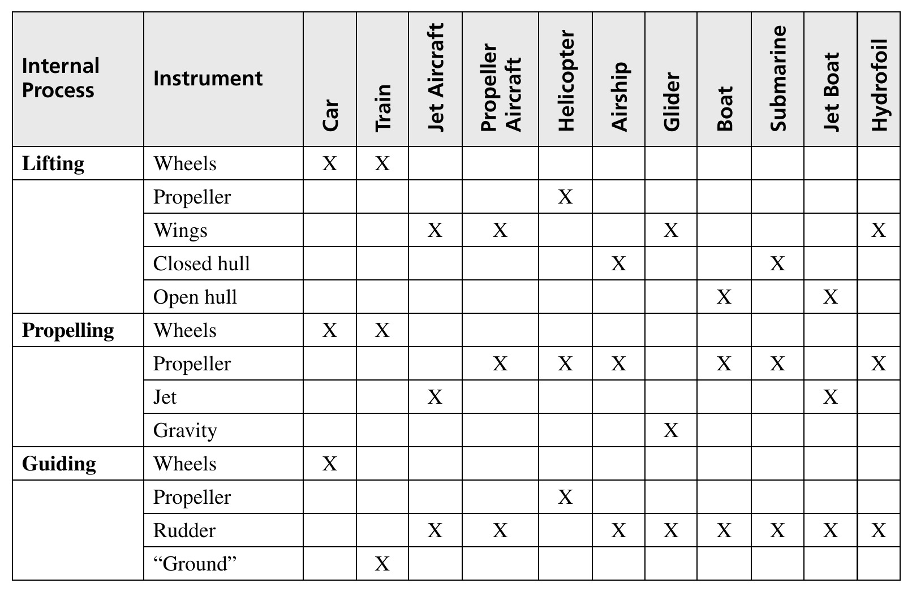
Each column is an integrated concept. Aircraft and gliders differ only in propulsion; airships and submarines are conceptually identical, differing only in operating medium. Source: Crawley, Cameron & Selva (2016), Table 7.6.
Integrating the Home Data Network
- The home network has five key internal processes: connecting the local network to the ISP; modulating the ISP carrier signal; managing data on the local network; connecting user devices; interacting with the user
- Combining one instrument per process (with some flexibility — a residential gateway and a separate WAP can both manage the network) yields an integrated concept
Figure 7.12 · An Integrated Concept for the Home Network
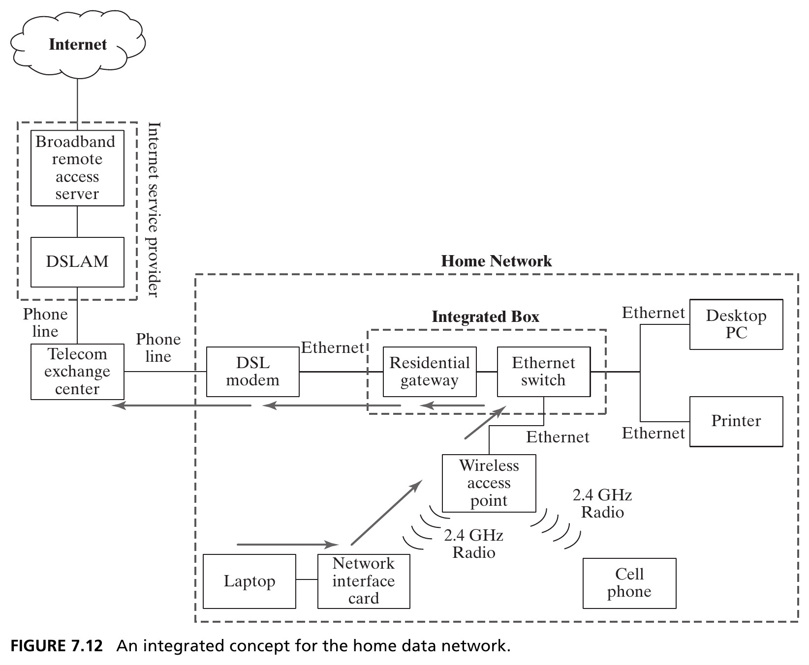
A DSL modem plus a box combining a residential gateway and Ethernet switch, with both WiFi and Ethernet connections to user devices. Source: Crawley, Cameron & Selva (2016), Fig. 7.12.
Table 7.8 · Three Integrated Concepts Compared
| Function | Concept 1 | Concept 2 | Concept 3 |
|---|---|---|---|
| Local network ↔︎ ISP | DSL | Coaxial cable | Mobile broadband |
| Modulating carrier | Dedicated DSL modem | Cable modem, integrated | Embedded broadband modem |
| Managing local data | Gateway + switch + WAP | Integrated modem/gateway/switch | Modem + phone tether |
| Connecting devices | WiFi + Ethernet | Cable + Ethernet | WiFi |
| Interacting with user | Laptop, phone, desktop, printer | VOIP, TV, desktop, printer | Laptop |
Section 7.4 Summary
- Rich concepts often unfold into a set of internal processes that must all be executed — choosing a specific operand, process, and instrument for each defines a concept fragment
- The architect explores and recombines concept fragments to build desirable integrated concepts
- The morphological matrix organizes this combinatorics — one column per integrated concept, one row per fragment choice
7.5 Concepts of Operations and Services
Concept of Operations (“ConOps”)
- Function is a somewhat static view of what a system can do; operation is the sequence of things leading to delivery of the primary function — what the system actually does (Ch. 6)
- The concept of operations sketches out how the system will operate: who operates it, when, and coordinated with what else
- The relationship between concept and architecture is the same as between concept of operations and a detailed operations sequence
Service vs. Good
If the enterprise transfers the instrument, it is a good (an aircraft manufacturer sells airplanes). If it transfers the function, it is a service (an airline sells transportation).
From the aircraft’s own conops, the aircraft is the operand — it’s loaded, flown, maintained. From the perspective of the service, the aircraft is the instrument — it transports the traveler.
Figure 7.13 · Two ConOps, Side by Side
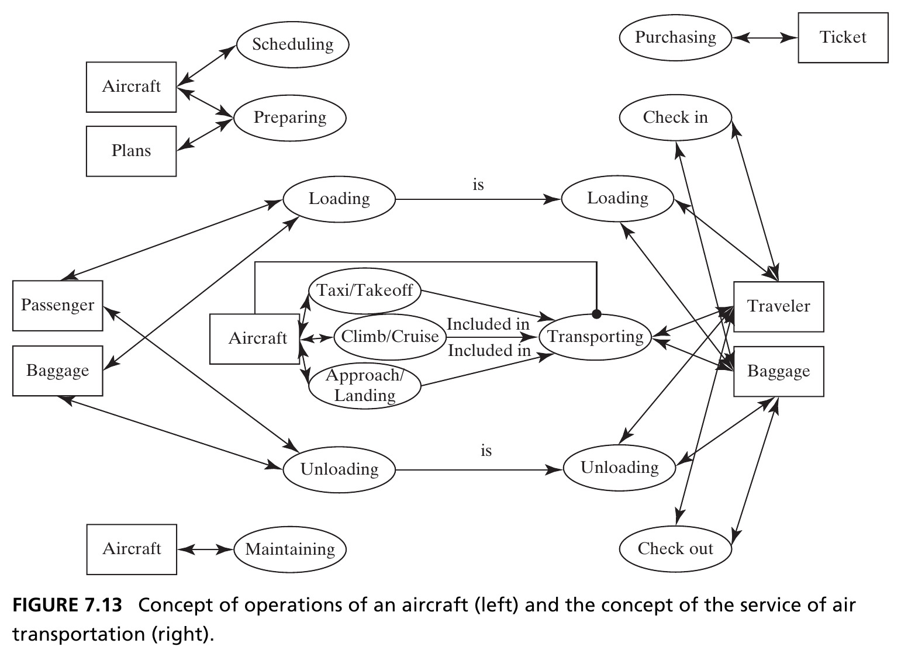
Left: the concept of operations of the aircraft itself (scheduling, loading, taxi/takeoff, climb/cruise, approach/landing, unloading, maintaining). Right: the concept of the service of air transportation, seen from the traveler’s side (purchasing, check-in, loading, transporting, unloading, check-out). Source: Crawley, Cameron & Selva (2016), Fig. 7.13.
A Service Is a System
- A service can be architected the same way as a system — it is simply more process-focused than a product
- The concept of operations contains information vital to understanding the system architecture: it’s much easier to predict how a system delivers value once you know how it operates
Tip
Details of taxi, takeoff, and the like are relatively unimportant to the traveler — but very important to the aircraft’s own concept of operations. Same system, different conops, depending on perspective.
Section 7.5 Summary
- The concept of operations defines, at a conceptual level, how the system actually operates when it delivers value
- Concepts of operations can be defined both for the system itself, and for any service built upon it
Chapter 7 Summary
- This chapter transitioned from simple to more complex systems, and from purely analytical to the beginning of a synthetic approach to architecture
- The synthetic process begins with the stakeholder’s need, expressed as a solution-neutral function — then specializes the operand, process, and instrument to define a concept
- For almost any solution-neutral function there are many possible concepts; the architect creatively develops, sorts, and selects among them
- Rich concepts unfold into concept fragments, recombined into an integrated concept — and a concept of operations describes how it all actually runs
Tip
Reference: Crawley, E., Cameron, B., & Selva, D. (2016). System Architecture: Strategy and Product Development for Complex Systems. Pearson. Chapter 7.
Next: System Architecture (Synthesis)
Chapter 8 builds on the selected concept and concept of operations to develop the full architecture of the system — completing the move from analysis to synthesis.

← Course Home · Systems Architecture · Chapter 7